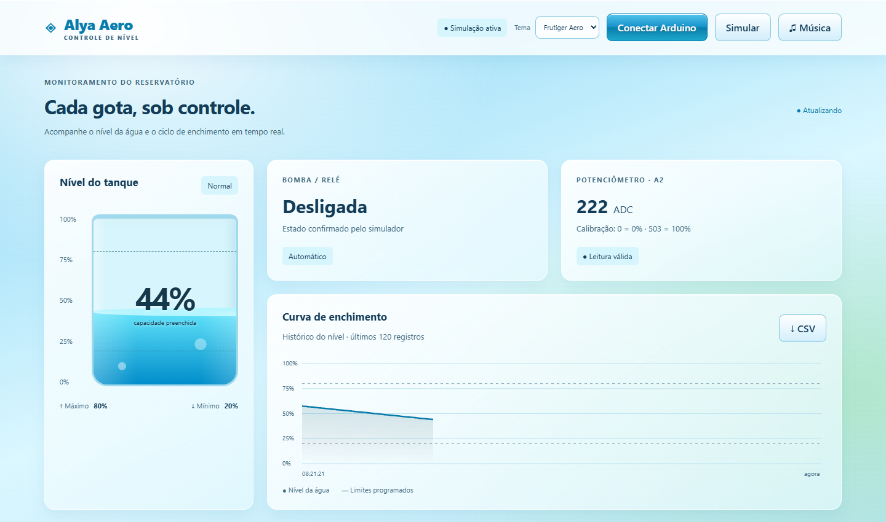

Veja o nível.
Um reservatório animado transforma a leitura do sensor em uma porcentagem fácil de acompanhar.
ARDUINO. ÁGUA. POSSIBILIDADES.
Um circuito lê. Uma interface traduz.
Você acompanha o que realmente importa.
Conheça o Alya Aero: monitoramento de reservatório, controle da bomba e dados que ganham vida na sua tela.
DO SINAL ANALÓGICO
À DECISÃO EM TEMPO REAL.
Demonstração do automático: liga até 20%, desliga a partir de 80%.
503ADCA REFERÊNCIA DE 100%
120amostrasNO HISTÓRICO DA SESSÃO
02modosAUTOMÁTICO + MANUAL
Menos adivinhação.
Mais visibilidade.
01 / EXPERIÊNCIA
UM PAINEL. VÁRIAS PERSPECTIVAS.O nível vira movimento. O histórico vira contexto.
E cada comando encontra seu lugar.
Capturas reais do painel em modo de simulação.

Um reservatório animado transforma a leitura do sensor em uma porcentagem fácil de acompanhar.
Curva de enchimento, limites visíveis e histórico exportável em CSV, com até 120 registros da sessão.
Acionamentos, tempo ligado e litros estimados a partir da vazão configurada, enquanto chegam dados.
02 / ENGENHARIA À VISTA
DO FÍSICO AO DIGITAL.O Arduino cuida do controle. O navegador mostra o que está acontecendo e envia seus comandos.
Explore no GitHubNa montagem atual, o potenciômetro em A2 representa o nível de água. A média de leituras reduz pequenas oscilações.
Zero significa vazio. 503 significa cheio. Leituras maiores continuam em 100%. O painel e o firmware precisam usar a mesma calibração.
nível = limitar(leitura × 100 / 503, 0, 100)No automático, liga em até 20% e desliga a partir de 80%. Entre os limites, mantém o estado anterior. Os limites são ajustáveis no painel.
No manual, o limite máximo continua protegendo o enchimento. Desligar muda o modo para Manual.
A conexão USB usa Web Serial, JSON e 9600 baud. O firmware também mantém SoftwareSerial para o módulo Bluetooth; o painel publicado utiliza USB.
O controle automático continua no Arduino, mesmo sem a página aberta.
UMA LEITURA, TRADUZIDA.
O JSON acompanha o reservatório do laboratório. Mova o controle no início da página para ver a transformação.
Voltar ao laboratório03 / COLOQUE EM MOVIMENTO
DO PRIMEIRO CLIQUE AO CIRCUITO.Abra o site e clique em Simular. Acompanhe o tanque, alterne os modos e teste os controles sem montar o circuito.
Na IDE Arduino, envie o sketch da sua montagem para o Uno. Para o potenciômetro, confira a calibração 0–503 e a velocidade de 9600 baud.
Feche o Monitor Serial. No Chrome ou Edge do computador, abra o painel, escolha 9600 baud e clique em Conectar Arduino.
Arduino Uno + potenciômetro de 10 kΩ + relé.
ALIMENTAÇÃO DA BOMBA SEPARADA DO ARDUINOPotenciômetroExterno positivo · HIGH
↗Leitura analógicaTerminal central · entrada
→PotenciômetroExterno negativo · LOW
↘ReléSinal de controle · ativo em LOW
→A0 e A4 são GPIO usados nessa montagem de teste. O relé e a bomba precisam de alimentação adequada. D13 também é o LED integrado: evite uma segunda escrita nesse pino.
ANTES DE CONECTAR
A hospedagem apresenta o site, mas não cria uma conexão remota com a placa. Na versão USB, o Arduino deve estar conectado ao computador que abriu o painel, em HTTPS ou localhost.
São uma estimativa: tempo observado com a bomba ligada × vazão configurada. A vazão padrão é 120 L/h. Isso não substitui um sensor de fluxo nem mede o consumo na saída do tanque.
Após 5 segundos sem dados, o painel sinaliza a ausência de leitura, bloqueia Ligar e suspende a contagem de uso. Períodos com a página fechada ou desconectada não são recuperados.
É uma montagem alternativa com HC-SR04: TRIG D9, ECHO D10, relé D7 e 115200 baud. Ela usa altura útil e distância com o tanque cheio. A escala 0–503 desta página é do potenciômetro, não uma distância em centímetros.
DA IDEIA PARA A ÁGUA.
Explore o painel. Entenda o circuito. Acompanhe cada gota.
Abrir o Alya Aero Ver o projeto no GitHub ↗